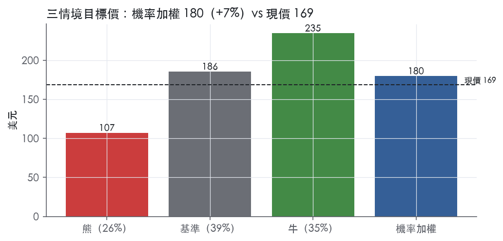
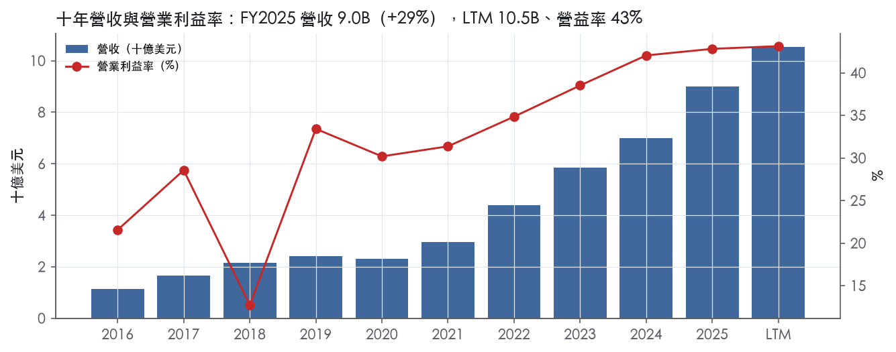
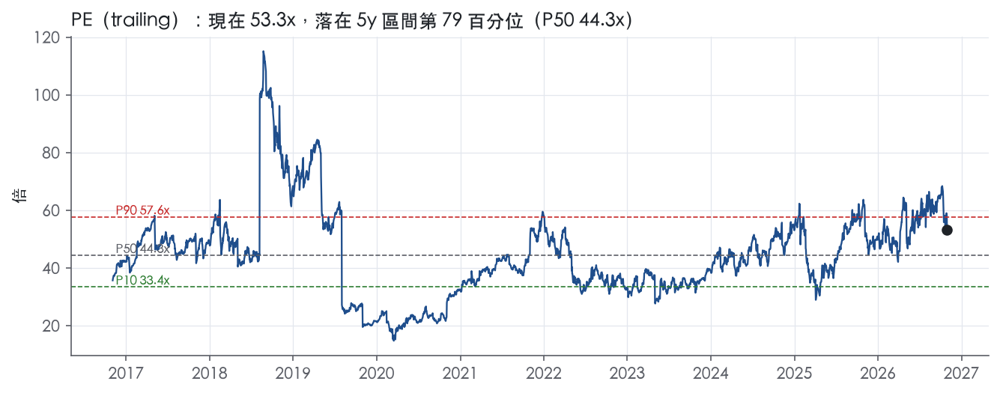
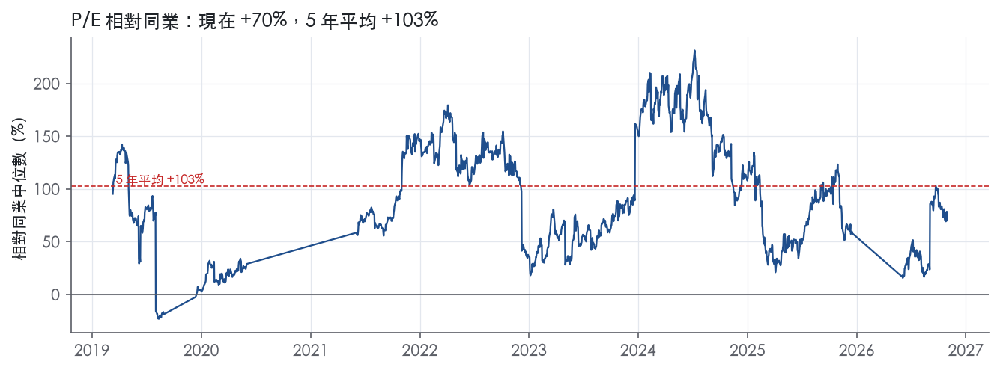
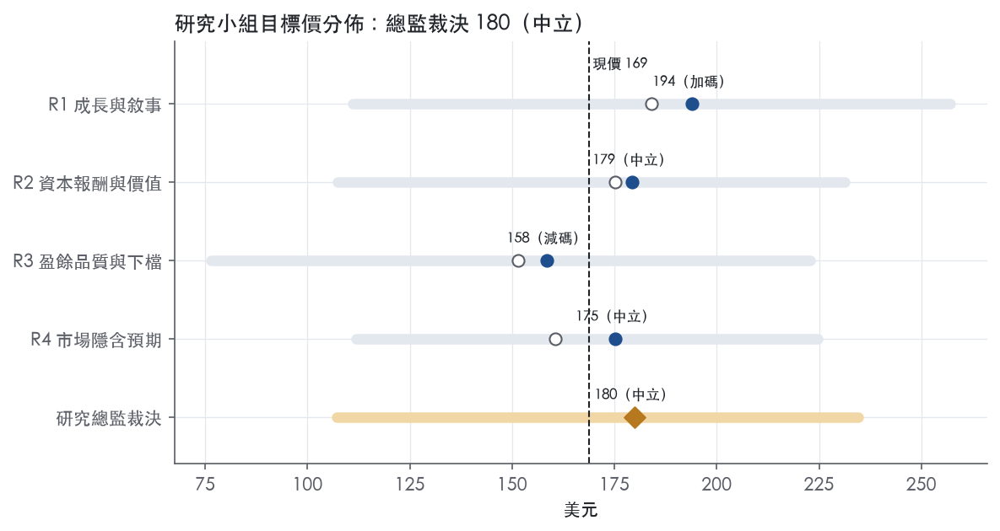
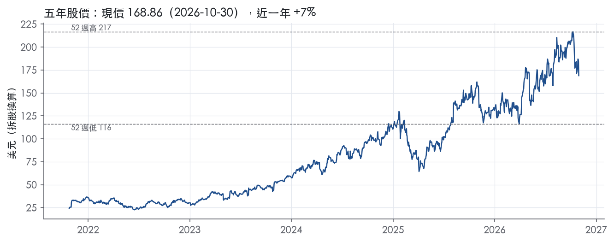

評等總表 › 資訊科技 › ANET
盈餘上修抵銷倍數回落，中性｜評等 中立｜目標價 180
| 評等 | 中立 |
| 12 個月目標價 | 180 美元 |
| 現價 | 168.86 美元（2026-10-30） |
| 預期報酬 | 股價 +6.5%＋股息 0.0%＝總報酬 +6.5%；同業籃門檻 8.2%，超額 -1.6% |
| 估值方法 | P/E 44.0x，套在未來四季的EPS |
| 三情境 | 熊 107／基準 186／牛 235 |
| 研究流程 | 四位研究員兩輪辯論＋研究總監裁決 |
| 資料來源 | SEC EDGAR XBRL、Tiingo、FRED（全免費） |
盈餘上修抵銷倍數回落，中性（研究總監裁決，四位研究員兩輪辯論後）
評等 中立｜12 個月目標價 180 美元（總監三情境機率加權 182 與研究員中位數 177 各半）｜現價 168.86（2026-10-30）
預期報酬：股價 +6.5%＋股息 0.0%＝總報酬 +6.5%。同業籃門檻 8.2%，超額 -1.6%。
估值方法：P/E 44.0x，套在未來四季的EPS。三情境：熊 107（26%）／基準 186（39%）／牛 235（35%）。
什麼會讓研究總監改變看法：Q3 營收低於指引 3.3B 或 Q4 指引季減、單季 GAAP 毛利率跌破 61.1%，轉偏空；2027 年初兩大客戶資本支出指引全面上修且 FY2026 遞延收入增量超過 H1 的 1,493.5M，轉偏多並把 y2 上調至 22%。
| 過去四季（實際，FY2026Q2） | 未來四季 | 第 5–8 季 | 第 9–12 季 | |
|---|---|---|---|---|
| 營收（B） | 10.5B | 14.2B | 16.8B | 18.5B |
| 營收成長 | 32.6% | 35.0% | 18.0% | 10.0% |
| 營業利益率 | 43.1% | 44.0% | 43.0% | 42.0% |
| EPS（美元） | 3.17 | 4.22 | 4.85 | 5.19 |
| EPS 成長 | 24.5% | 33.2% | 14.9% | 7.0% |
| 每股股息（美元） | — | 0.00 | 0.00 | 0.00 |
| P/E（現價） | 53.3x | 40.0x | 34.8x | 32.5x |
| 股息殖利率（現價） | — | — | — | — |
過去四季為申報數字；預測為研究總監的假設、程式計算。倍數與殖利率都用現價計算，用來看現價對應各期獲利的高低。
| 情境 | 機率（歷史） | 故事 | 未來四季營收成長 | 第 5–8 季營益率 | 倍數 | 目標價 | 股價漲跌 |
|---|---|---|---|---|---|---|---|
| 熊 | 26%（25%） | 風險表第 1 條疊加第 5 條：前兩大客戶無預警延單或轉自研，毛利率跌破 61.1%，疊加本行 2027Q3 下行情境，倍數落到 5 年 P10 | 15.0% | 38.0% | 32.0x | 107 | -36.5% |
| 基準 | 39%（39%） | NTM 盈餘成長吸收倍數從 53.3x 回落到五年中位數 44x | 35.0% | 43.0% | 44.0x | 186 | 10.0% |
| 牛 | 35%（36%） | Scale Out 轉乙太網路加速、連續兩季優於指引、營益率守 45% 以上，倍數回到 5 年 P50 與 P90 之間 | 38.0% | 45.5% | 52.0x | 235 | 38.9% |
目標價由程式依研究總監的驅動與倍數計算；機率由研究總監給定。括號內是歷史頻率：把這檔股票過去十年 12 個月報酬的波動形狀，置中在基準情境，結果落在各情境附近的比例。

四位研究員用不同方法各自估值，回應研究總監的質疑後交出第二輪，最後由總監逐點裁決。各研究員的主張見第七章，裁決理由見第八章，完整論證見《研究底稿》。
| 立場（一輪→二輪） | 加權目標價（一輪→二輪） | 評等（一輪→二輪） | 第二輪倍數 | 熊～牛目標價 | |
|---|---|---|---|---|---|
| R1 成長與敘事 | 看多→看多 | 184→194 | 中立→加碼 | 48.0x | 111～257 |
| R2 資本報酬與價值 | 中性→中性 | 175→179 | 中立→中立 | 44.0x | 107～231 |
| R3 盈餘品質與下檔 | 看空→看空 | 151→158 | 賣出→減碼 | 34.0x | 76～223 |
| R4 市場隱含預期 | 中性→看空 | 160→175 | 減碼→中立 | 35.0x | 112～225 |
| 研究總監裁決 | 中性 | 180 | 中立 | 44.0x | 107～235 |
目標價由程式依各自的驅動與倍數計算；評等＝機率加權總報酬 − 同業籃門檻。
Arista Networks 是一家以軟體驅動的網路作業系統 EOS 為核心，賣高速乙太網路交換機、路由平台與網路管理軟體給雲端巨頭、AI 新創雲服務商與企業客戶的網路基礎設施公司。公司將自己定位為「Centers of Data」策略的執行者，透過統一、數據驅動的架構串連 AI Center、Data Center、Campus Center 與 WAN Center 四大網域¹。客戶被公司自己分為三大類：Cloud and AI Titans、AI and Specialty Providers，以及 Enterprise¹。FY2025 營收 9.01B 美元，年增 28.6%，過去十年營收規模擴張近八倍（FY2016 僅 1.13B）。
Arista 不以傳統「分部」揭露財報，而是用三個產品類別描述業務組合：Core（AI、雲端與資料中心網路）、Cognitive Adjacencies（校園網路與路由）、Cognitive Networks（軟體與服務）¹。各類別占營收比重與獨立財務數據 10-K 未揭露。AI 網路是目前成長敘事的核心，公司將 AI 連網拆成 Scale Up、Scale Out、Scale Across 三個子領域，並表示 Scale Out 市場正從 InfiniBand 等專有技術轉向 Ultra Ethernet Consortium 定義的乙太網路標準，是 Arista 搶份額的機會¹。旗艦產品線 Etherlink 涵蓋逾二十款產品，支援現有 Scale Out／Scale Across 與未來的 Scale Up 需求¹。Campus 與 Routing 方面，公司近期加入 VeloCloud SD-WAN 產品線，補強有線、無線校園組合與分支 WAN 服務¹。軟體與服務面以 CloudVision 管理平台、Network Data Lake（NetDL）與代理式 AI 助手 Arista AVA 為主，另有零信任安全方案與 A-Care 客戶支援服務¹。從財報營收結構看，產品營收遠大於服務營收，FY2026Q2 產品營收 2,605.2M、服務營收 430.5M（約占總營收 14%）²，顯示公司仍是硬體為主、服務為輔的營收結構。
客戶高度集中在少數大型雲端廠商，FY2025 有兩名客戶各占總營收 26% 與 16%，合計逾四成¹。公司透過直銷團隊搭配經銷商、加值經銷商（VAR）、系統整合商與 OEM 夥伴的 Arista Partner Program 進行銷售，夥伴一般不囤庫存，須先取得終端客戶訂單才向 Arista 下單¹。製造高度仰賴少數委外夥伴：Jabil、Sanmina、Foxconn Hon Hai，產地在馬來西亞、越南、墨西哥等地，成品經美國、荷蘭、新加坡四個直發中心配送¹。關鍵元件供應上，公司明確揭露其主要商用晶片供應商為 Broadcom，且與元件供應商通常沒有書面保證供貨協議¹。地區營收細分 10-K 未揭露。
FY2025Q4（期末 2025-12-31，推導）營收 2.49B 美元，年增 28.9%，營益率 41.5%。FY2026Q1 營收 2,709.0M 美元，季增 8.9%、年增 35.1%，GAAP 營益率 42.7%、non-GAAP 營益率 47.8%，GAAP 稀釋 EPS 0.80 美元，營運現金流 1,693.5M 美元³；公司當時對 Q2 的指引為營收約 2.8B 美元、non-GAAP 營益率 46–47%、non-GAAP 稀釋 EPS 約 0.88 美元³。FY2026Q2 營收 3,035.7M 美元，年增 37.7%，首次單季突破 3B 美元，GAAP 營益率 45.4%、non-GAAP 營益率 49.9%，GAAP 稀釋 EPS 0.95 美元、non-GAAP 稀釋 EPS 1.02 美元，營運現金流 2,776.5M 美元（六個月累計）²。CEO Jayshree Ullal 表示「Arista 2.0 平台策略」驅動了首個 30 億美元季度²。公司對 FY2026Q3 的指引為營收約 3.3B 美元、non-GAAP 營益率 48–49%、non-GAAP 稀釋 EPS 1.06–1.08 美元²。整體四季軌跡呈現營收加速（年增率從 28.9% 升到 37.7%）與利潤率同步擴張的健康型態。
公司將 AI 驅動的網路需求視為核心成長引擎，表示「網路已從傳統 IT 基礎設施演化為中樞神經系統」，是資料從雲端與邊緣流向 AI 模型決策的關鍵通道¹。公司強調其差異化在於開放標準架構而非供應商鎖定，並指出 Scale Up 領域目前由專有技術主導，但相信市場將轉向如 Ethernet for Scale Up Networks（ESUN）等開放標準，帶來未來增量機會¹。在校園與路由領域，公司表示客戶希望把資料中心等級的品質與運維效率帶到企業網路，驅動了 Cognitive Campus 與 VeloCloud SD-WAN 的擴張¹。CFO Chantelle Breithaupt 將 FY2026Q2 的表現歸因於「強勁、廣泛的成長」與團隊的執行力²。公司也持續強調其高淨推薦分數（2026 年 NPS 為 89，94% 客戶正面評價）作為客戶黏著度的證明³。整體而言，Arista 的成長故事建立在「AI 骨幹網路從 InfiniBand 轉向開放乙太網路」這個結構性轉換上，客戶集中度偏高（前兩大客戶占營收逾四成）是最大的營收波動風險。目前 trailing P/E 53.3x、EV/Sales 19.2x 均處於五年分位數 70～80% 的偏貴區間，市場已為這個成長敘事付出溢價。

Arista 的護城河評為「窄」：EOS 帶來的轉換成本與軟體品質聲譽，足以讓 ROIC 未來 5 年以上維持在資本成本之上，但撐到 10 年以上的把握不夠。歷史數字幾乎符合寬護城河的樣子，下修的理由在產業結構，有三點：買方是議價力極強的少數雲端巨頭、核心交換晶片與對手共用、公司自己的賣點又是「不鎖定」。趨勢判為穩定。AI 後端網路從 InfiniBand 轉向乙太網路，擴大了 Arista 可服務的市場。同一個轉變也把 Nvidia 垂直方案與白牌設備拉進同一個戰場，兩股力量目前大致抵銷。
主要來源是轉換成本，次要來源是無形資產，其餘三類找不到可點名的證據。
轉換成本：客戶的運維流程建在 Arista 的單一軟體堆疊上，公司描述其平台 "relying on a single operating system (EOS), a single data lake (NetDL), and a single management solution (CloudVision)"¹。CloudVision 涵蓋資料中心、校園有線與無線、路由與多雲的 zero-touch 運維¹。這些功能越深入客戶的自動化腳本與監控流程，換供應商的重新驗證與重新訓練成本就越高。公司也表示其成功建立在 "deep engineering partnerships with our customers"¹。與大客戶共同開發形成的路線圖綁定，是硬體規格以外的黏著來源。這項轉換成本有明確上限：公司自稱方案基於開放標準，"avoids what is often expensive vendor lock-in"¹。開放介面降低了客戶的退出門檻，所以我們把轉換成本定位在中等強度。
無形資產：這裡的無形資產主要是軟體技術與品質聲譽，專利不構成護城河。公司表示 "Market research confirms that we continue to be a leader in high-speed Ethernet switching"¹。核心商標包括 Arista、EOS 與 CloudVision¹。公司也承認其專利 "may be contested, circumvented, found unenforceable or invalidated"¹。
數字完全支持至少「窄」的評級，表面上甚至符合「寬」。ROIC 有資料的 9 年中，9 年都高於資本成本。十年平均 ROIC 193.1%，最低 95.5%，資本成本代理值 10.0%。毛利率十年平均 63.5%、標準差 1.0%，區間在 61.1% 到 64.5% 之間。營收衰退 -3.9% 的那一年，毛利率也守住了。這是定價力穩定的直接證據。營業利益率最新 42.8%，同時也是十年最高。這反映規模槓桿，不是一次性因素。
數字與我們的評級有衝突，我們仍維持「窄」，理由有三。第一，ROIC 標準差達 99.3%。數值極高、波動又大，主要是委外製造使投入資本基數很小，這是商業模式的產物，不能全算成護城河強度。第二，這段十年紀錄落在雲端與 AI 資本支出擴張期，還沒經歷大客戶全面轉向自研或白牌的壓力測試。第三，近兩季毛利率 61.9%與 62.9%都低於十年平均 63.5%。這可能是大客戶議價力開始顯現的早期訊號。
最大的侵蝕來源是客戶集中，其次是自研、白牌與 Nvidia 垂直整合。FY2025 有兩名客戶分別占總營收 26% 與 16%¹。公司揭露，客戶可能自行開發網路交換設備供內部使用，部分業者也在發展基於開源作業系統的白牌產品¹。IB 與 NVLink "are often sold as part of a vertical solution along with the GPUs from Nvidia"¹。Scale Up 領域目前仍由專有技術主導¹。供應端方面，公司主要仰賴 Broadcom 的交換晶片，且沒有書面協議保證關鍵元件供貨¹。Broadcom 已收購 VMware，Hewlett Packard Enterprise 已收購 Juniper Networks¹。公司自己也警告，新進者與替代技術 "may create downward pricing pressure"¹。
如果毛利率連續多季跌破十年最低 61.1%，我們會把評級下修為「無」。
目標倍數應相對網通設備同業給予溢價，因為轉換成本與定價力已經用十年穩定的毛利率證明過。溢價應該按 5 年左右遞減處理，不適用寬護城河那種 10 年以上的高報酬延續假設。目標 P/E 建議落在 5 年中位數 44.3x到 P90 57.6x之間；以目前的護城河評級，不支持超出區間上緣的倍數。
| 指標 | 最新 | 十年平均 | 標準差 | 最低 | 最高 |
|---|---|---|---|---|---|
| ROIC | 192.0% | 193.1% | 99.3% | 95.5% | 449.5% |
| 毛利率 | 64.1% | 63.5% | 1.0% | 61.1% | 64.5% |
| 營業利益率 | 42.8% | 31.6% | 8.8% | 12.7% | 42.8% |
| FCF 利潤率 | 47.2% | 32.0% | 12.8% | 10.2% | 52.5% |
| ROE | 31.4% | 28.3% | 6.0% | 17.2% | 34.5% |
程式計算。資本成本代理值（10 年債＋5%）：10.0%；ROIC 平均減資本成本：183.1%；ROIC 有資料的 9 年中，高於資本成本 9 年。
LTM 營業現金流／淨利 1.31x、自由現金流／淨利 1.27x，近三年與十年平均都維持在1倍以上。應計比率為負值（LTM -5.6%、近三年 -3.9%、十年 -2.5%），代表盈餘品質由現金而非應計項目驅動。唯一真正未解釋的紅旗是FY2025應收帳款成長比營收快37個百分點，需要在下文逐條檢視。
現金持續跑在淨利前面，過去十年僅FY2022因營運資金壓力CFO/FCF明顯弱於淨利，其餘年度現金轉換都健康。FY2025 CFO 4.37B、FCF 4.25B，對比淨利3.51B，CFO／淨利約1.24x（資料包年度表）。最新一季（FY2026Q2 LTM）現金轉換進一步優化至CFO／淨利1.31x、FCF／淨利1.27x。8-K揭露2026上半年CFO為2,776.5M，對比淨利2,235.8M，現金流優於帳列獲利²。應計比率全面為負，顯示遞延收入（deferred revenue半年增加1,493.5M）持續貢獻現金但尚未全部認列為收入，這是典型的「現金領先盈餘」結構，而非盈餘品質惡化。
公司非GAAP調整的核心項目是股權激勵費用與無形資產攤銷。FY2026Q2單季SBC總額120.4M（去年同期85.2M），其中研發70.1M、銷售與行銷32.2M、一般管理10.7M、成本面7.4M²。無形資產攤銷單季15.3M（去年同期5.0M），六個月累計30.6M（去年同期10.6M），增幅遠大於營收增幅，可能與近期併購的無形資產有關²。此外還剔除策略性投資的(gains)/losses 6.0M、稅務相關的股權獎勵稅收利益30.9M與非GAAP排除項目所得稅效果10.0M²。GAAP稀釋EPS 0.95，非GAAP稀釋EPS 1.02，差距主要來自SBC加回與攤銷加回²。我方判斷：SBC是真實的經濟成本（會稀釋股東權益與股數），不應該簡單加回視為噪音；攤銷費用隨併購增加，屬於真實但非現金的成本，分析時應部分認列為營運成本的一部分。策略性投資損益與稅務項目波動性大，加回合理，屬於真正的一次性／非核心項目。
資產負債表極為穩健，淨負債-13.34B（淨現金部位），淨負債／EBITDA -2.88x（LTM），公司完全沒有舉債壓力。總債務在最近八季全部顯示0.00B（資料包季度表），公司事實上是零有息負債狀態，利息保障倍數因此無法計算（十年平均116.0x反映過去有過極小額利息費用時代的畸高比率）。股東回饋力度偏低：（股利＋回購）／淨利 LTM僅15.3%，近三年22.0%，十年平均36.8%，均為黃燈，顯示公司現金主要留存在資產負債表（現金＋有價證券合計FY2026Q2達13.34B）而非積極回饋股東，且公司明確不配息¹（"our belief that we will not pay any cash dividends in the foreseeable future"）¹。稀釋股數年變動LTM 0.2%、近三年0.3%、十年平均1.0%，均為輕微正值黃燈，顯示SBC發行的新股略快於回購沖銷的速度，但程度溫和。
估值錨點應以GAAP淨利與GAAP EPS為主軸，SBC是真實經濟成本不應該無條件加回，但可以同時參考非GAAP數字作為營運趨勢的輔助指標。鑑於現金轉換持續健康、應計比率為負、零槓桿加淨現金部位，盈餘不需要大幅打折，但SBC／營收黃燈（4.8%–5.1%區間）建議估值時用GAAP稀釋EPS或完全稀釋股數計算每股價值，避免低估股權稀釋成本。零淨負債、零有息債務意味著槓桿完全不構成倍數上限的限制，目前53.3x的P/E與43.0x的EV/EBITDA定價空間主要取決於成長延續性，而非資產負債表風險。
| 項目 | LTM | 近三年 | 十年 | 燈號 | 規則 |
|---|---|---|---|---|---|
| 營業現金流／淨利 | 1.31x | 1.17x | 1.13x | 綠 | ≥1.00x 綠、<0.80x 紅 |
| 自由現金流／淨利 | 1.27x | 1.15x | 1.09x | 綠 | ≥0.90x 綠、<0.60x 紅 |
| 應計比率（(淨利−CFO)／平均總資產） | -5.6% | -3.9% | -2.5% | 綠 | ≤0.0% 綠、>5.0% 紅 |
| SBC／營收 | 4.8% | 5.0% | 5.1% | 黃 | ≤3.0% 綠、>8.0% 紅 |
| 淨負債／EBITDA | -2.88x | -2.55x | -3.31x | 綠 | ≤1.50x 綠、>3.00x 紅 |
| 利息保障倍數（營業利益／利息） | — | — | 116.0x | — | ≥8.00x 綠、<3.00x 紅 |
| 稀釋股數年變動 | 0.2% | 0.3% | 1.0% | 黃 | ≤0.0% 綠、>3.0% 紅 |
| （股利＋回購）／淨利 | 15.3% | 22.0% | 36.8% | 黃 | ≥50.0% 綠、<0.0% 紅 |
| 應收帳款成長 − 營收成長（FY2025） | +36.8pp | — | — | 紅 | ≤5pp 綠、>15pp 紅 |
| 存貨成長 − 營收成長（FY2025） | -6.1pp | — | — | 綠 | ≤5pp 綠、>15pp 紅 |
程式計算；燈號以 LTM（無則近三年平均）判定。
| 風險 | 觸發指標（看什麼數字、在哪裡看） | 對 EPS 的影響方向與粗略幅度 | 未來 12 個月發生機率 | 出處 |
|---|---|---|---|---|
| 大客戶集中度：兩大客戶合計占營收 42%，訂單可延遲／取消 | 季報揭露的客戶集中度百分比；單季營收年增率是否從 37.7% 急降 | 負向，大（客戶若縮單，營收與營益率同步下滑，公司明言會壓縮毛利） | 中 | 10-K 年報 FY2025 Item 1A（風險因素） |
| 估值已偏貴：P/E 53.3x 處於五年分位 79.4%，EV/Sales 19.2x 處於 77.9% | trailing P/E、EV/Sales 相對 5年 P50／P90 的位置（band.*） | 負向，大（估值壓縮不影響 EPS 本身，但放大股價對任何 EPS 不如預期的反應） | 中 | 研究判斷 |
| 關鍵晶片單一供應商依賴（Broadcom 為主要商用矽晶片供應商，無書面保供協議） | Broadcom 供貨公告、公司財報中毛利率／交期說明 | 負向，中（若供貨延遲或漲價，毛利率與交付時程受影響） | 低 | 10-K 年報 FY2025 Item 1A（風險因素） |
| 關稅與貿易政策（美國對中國等 301／232 關稅及他國報復性措施，產品主要產自馬來西亞、越南、墨西哥） | 美國/中國/墨西哥關稅公告日期；公司毛利率季度變化 | 負向，中（公司明言可能無法完全轉嫁成本至客戶，壓縮毛利） | 中 | 10-K 年報 FY2025 Item 1A（風險因素） |
| 毛利率結構性下滑：FY2026Q2 GAAP 毛利率 62.9%，低於 FY2025Q2 的 65.2% | 季度 GAAP／non-GAAP 毛利率（8-K 揭露） | 負向，中（毛利率已連續下滑約 2.3 個百分點，若持續惡化直接壓縮 EPS） | 中 | 8-K 財報新聞稿（2026-08-04） |
客戶集中度是最大的單一風險。 公司自己揭露，FY2025 有兩名客戶各占總營收 26% 與 16%，合計逾四成；FY2024、FY2023 分別為 20%+15%、18%+21%⁴。公司明言這些大客戶的採購「複雜且不可預測」，且客戶可能因 AI 資本支出優化、成本削減措施而調整採購節奏，甚至「little or no notice」就取消或延遲訂單⁴。這個風險可被監測：下一份 10-K／10-Q 的客戶集中度揭露百分比，以及單季營收年增率是否偏離目前 30%+ 的軌跡。
估值已經把成長故事定價得很滿。 目前 trailing P/E 53.3x 處於五年分位數 79.4%，EV/Sales 19.2x 處於 77.9%。這不是公司寫在風險因子裡的項目，但任何「營收成長不如預期」或「客戶訂單延遲」的消息，在這個分位數下會被市場放大反應，EPS 本身可能沒變，但乘數可能從 53x 修正向 5 年中位數 44.3x。
供應鏈單點依賴：Broadcom。 公司明確寫出「我們主要依賴我們的主要商用矽晶片供應商 Broadcom 供應交換晶片」，且與元件供應商「一般沒有書面協議保證供貨」⁴。若 Broadcom 無法持續創新或供貨不足，公司產品競爭力與出貨時程都會受影響，進而衝擊營收與毛利率⁴。監測指標是 Broadcom 相關供貨新聞與公司季度毛利率是否出現非正常波動。
關稅與貿易政策的不確定性。 公司產品主要在馬來西亞、越南、墨西哥製造，部分元件來自中國、台灣、泰國、菲律賓，10-K 明確點名美國 301 條款關稅、2025 年 2 月起的國別關稅，以及中國、墨西哥等國的報復性措施（包括稀土出口管制）⁴。公司直言「可能無法將貿易相關成本增加完全轉嫁給客戶或夥伴」，這會壓縮毛利率⁴。可監測指標是美中關稅政策公告日期，以及公司財報毛利率是否偏離指引區間。
毛利率已出現下滑跡象。 FY2026Q2 GAAP 毛利率 62.9%，低於去年同期 65.2%，non-GAAP 毛利率同樣從 65.6% 降至 63.4%²。公司在風險因子中列出多項可能壓縮毛利率的因素：大客戶議價力、產品組合轉向較低毛利的軟體訂閱、關稅成本、以及商用矽晶片成本⁴。這個下滑若持續到下一季財報，會直接侵蝕 EPS，是五條風險中「已經在發生」而非純屬假設的一條。
AI 資本支出的「需求透視度」本質上是靠少數超大型雲端客戶的規劃，一旦其中任何一家調整 AI 基礎設施的架構效率（例如降低每單位運算的網路頻寬需求），可能不會被 10-K 的客戶集中度揭露及時捕捉到，因為揭露是年度／季度回溯性的，而非前瞻指標。 建議監測這些超大客戶自己的資本支出指引與財報會議用語（例如是否提及「網路效率優化」）。
股票薄利股數增發與高額 SBC（FY2026H1 SBC 達 241.3M／季，年化對比 EPS 稀釋）本身不是現金風險，但在目前高乘數下，市場對 SBC 佔營收比重（約 4.9-5%）的容忍度可能隨股價修正而收緊，形成本益比與留才成本的雙重壓力。 可監測指標為 SBC/營收比率趨勢與稀釋股數年增速度。
現價 168.86 對應 trailing（過去四季）P/E 53.3x、EV/EBITDA 43.0x、EV/EBITA 43.9x、EV/Sales 18.9x、FCF 殖利率 2.4%。主要估值倍數 P/E 現在 53.3x，落在5 年區間第 79 百分位（P10／P50／P90 = 33.4x／44.3x／57.6x）。

把程式的機械基準預測放到現價下，市場付的前瞻倍數是：P/E（未來四季） 44.5x、P/E（第 5–8 季） 38.9x。反推 DCF 顯示市價隱含未來五年營收年成長 23.0%（WACC 9.0%、終值成長 3.0%、FCF 利潤率 36.6%，SBC 不加回）。
| 倍數 | 現在 | 5 年 P10 | 5 年 P50 | 5 年 P90 | 現在分位 | 全期 P50 |
|---|---|---|---|---|---|---|
| P/E | 53.3x | 33.4x | 44.3x | 57.6x | 79.4% | 43.6x |
| EV/EBITDA | 43.6x | 26.6x | 37.4x | 49.3x | 73.4% | 34.4x |
| EV/EBITA | 44.5x | 27.9x | 39.7x | 49.9x | 70.5% | 38.4x |
| EV/EBIT | 44.5x | 27.7x | 38.6x | 50.4x | 71.4% | 36.8x |
| EV/Sales | 19.2x | 9.4x | 14.3x | 21.5x | 77.9% | 10.4x |
| P/S | 20.4x | 10.3x | 15.4x | 22.7x | 78.7% | 11.3x |
| P/FCF | 41.8x | 35.4x | 45.6x | 66.8x | 30.6% | 41.2x |
trailing 倍數（股價 ÷ 過去四季）；分位以每個交易日計算。
同業籃：CSCO, CIEN, HPE（手動名單（playbooks/peers.yaml））。評等門檻 8.2%：同業「倍數不變下持有一年」的隱含報酬中位數（＝ FCF 殖利率 ×(1＋g)＋g，g 為 5 年營收年複合成長並夾在 −2%～8%），每家夾在 0～15%、P/E 低於 5 倍視為資料可疑而排除，中位數再限制在 10 年債到 10 年債＋5% 之間。
| 代號 | 市值 | 5 年營收 CAGR | 營益率 | ROIC | P/E | 5 年 P/E 中位數 | EV/EBITDA | P/FCF | 隱含報酬 |
|---|---|---|---|---|---|---|---|---|---|
| ANET | 213.0B | 31.2% | 43.1% | 192.0% | 53.3x | 44.3x | 43.0x | 41.3x | 10.6% |
| CSCO | 412.4B | 4.9% | 24.3% | 22.6% | 31.3x | 20.0x | — | 32.3x | 8.2% |
| CIEN | 45.5B | 6.2% | 12.3% | 5.1% | 71.5x | 47.1x | 52.0x | 55.9x | 8.1% |
| HPE | 73.2B | 4.9% | 6.2% | -0.7% | 28.4x | 15.3x | 14.2x | 17.6x | 10.9% |
| 同業中位數 | 4.9% | 12.3% | 5.1% | 31.3x | 20.0x | 33.1x | 32.3x | 8.2% |
全部 trailing，程式以各公司 SEC XBRL 與 Tiingo 行情計算；第一列為本檔。
P/E 相對同業中位數：現在 70.2%，過去 1 年平均 —、3 年 105.9%、5 年 102.6%。

取數失敗而排除的同業：NVDA（行情兩個來源都失敗 → _tiingo: 429 Client Error: Too Many Requests for）、AVGO（行情兩個來源都失敗 → _tiingo: 429 Client Error: Too Many Requests for）。
事後實現前瞻倍數帶（P/E，2018-08-17..2025-08-15）：P10／P50／P90 = 20.2x／25.9x／33.4x。它是每個交易日的股價除以之後四季實際實現的指標；一年後，今天的第 5–8 季正是那時的未來四季，所以這條帶是 12 個月目標價的同口徑倍數。因為用的是事後實際而非當時預期，過去成長超乎預期的公司這條帶會偏低。
程式的機械基準（成長率從過去四季年增率三年收斂到 6%、利潤率持平）用 事後實現前瞻 P/E P50 估值得到 112（-33.5%），市場現行前瞻倍數（現價 ÷ 基準 未來四季指標）一年後持平，套在基準 第 5–8 季指標得到 193。這兩個數字只是參考點，不是本報告的目標價；研究員對這個定價的回應在第七章。
下表是每位研究員第一輪（各自獨立）與第二輪（回應研究總監的質疑後）的結果。目標價全由程式依各自的假設計算。
| 立場（一輪→二輪） | 加權目標價（一輪→二輪） | 評等（一輪→二輪） | 第二輪倍數 | 熊～牛目標價 | |
|---|---|---|---|---|---|
| R1 成長與敘事 | 看多→看多 | 184→194 | 中立→加碼 | 48.0x | 111～257 |
| R2 資本報酬與價值 | 中性→中性 | 175→179 | 中立→中立 | 44.0x | 107～231 |
| R3 盈餘品質與下檔 | 看空→看空 | 151→158 | 賣出→減碼 | 34.0x | 76～223 |
| R4 市場隱含預期 | 中性→看空 | 160→175 | 減碼→中立 | 35.0x | 112～225 |
| 研究總監裁決 | 中性 | 180 | 中立 | 44.0x | 107～235 |
目標價由程式依各自的驅動與倍數計算；評等＝機率加權總報酬 − 同業籃門檻。
分歧度：第一輪 加權目標價 151～184（區間＝現價的 19%）· 倍數 34～48x · 立場 看多×1、中性×2、看空×1；第二輪 加權目標價 158～194（區間＝現價的 21%）· 倍數 34～48x · 立場 看多×1、中性×1、看空×2。

| 研究員 | 第二輪主張 | 堅持的理由 |
|---|---|---|
| R1 成長與敘事 | 偏多，P/E取48倍，未來一年營收成長32%。 | 倍數取五年中位數44.3倍與高檔57.6倍之間，不降到44倍。 |
| R2 資本報酬與價值 | 中性，P/E取44倍，錨在自家五年中位數44.3倍。 | 第二年營收成長維持14.9%，大客戶消化期會讓成長階梯式降檔。 |
| R3 盈餘品質與下檔 | 偏空，對第二年盈餘取34倍，目標價156.07美元低於現價。 | 熊情境不縮：第二年營收衰退4%、營益率37%。 |
| R4 市場隱含預期 | 偏空，對第二年盈餘取35倍，未來一年營收成長35%。 | 市場要求五年每年成長23%，高估第四、五年的耐久度。 |
每位研究員的逐條回應與完整論證見《研究底稿》（ANET_研究底稿_2026-11-01.docx）。
| 分歧點 | R1 成長 | R2 價值 | R3 品質 | R4 預期 | 什麼資料會分出勝負 |
|---|---|---|---|---|---|
| ① NTM 營收成長（rev_growth_y1） | 32%，季度路徑 3.35／3.45／3.50／3.60B（假設），Q4 起季增放緩 | 30%，依近兩季年增與 Q3 指引 | 30%，遞延收入撐 NTM | 35%，Q3 指引加 H1 遞延收入 +1,493.5M | FY2026Q3 實際營收與 Q4 指引（8-K，2026-11 月初）；FY2026 全年遞延收入增量（2027-02） |
| ② Q5–Q8 營收成長（rev_growth_y2） | 18%，FY2022–25 四年三年 >25% | 14.9%（沿基準），單一客戶消化即階梯降檔 | 16%，沿第一輪 | 20%，五年路徑 35／20／10／8／7 | 2027 年 1–2 月兩大雲端客戶 2027 資本支出指引；FY2026 10-K 客戶集中度（2027-02）；FY2027Q1 年增率（2027-05） |
| ③ 目標倍數與錨（multiple） | 48x eps@ntm，5 年 trailing P50–P90 間偏 P50 | 44x eps@ntm，5 年 P50 44.3x／10 年 P50 43.6x | 34x eps@q5_q8，事後實現帶修正偏誤三成（假設） | 35x eps@q5_q8，帶 P90 略上，第 4、5 年耐久度折讓 | 無法直接觀測；替代指標：FY2026 遞延收入增量是否超過 H1 1,493.5M、GAAP 毛利率是否守 61.1% |
| ④ 熊情境深度（風險表第 1 條） | y2 2%、營益率 37%、34x → -44% | y2 -5%、38%、32x → -41% | y2 -4%、37%、26x → -51% | y2 6%、41%、28x → -36% | FY2026 10-K 前兩大客戶占比；存貨 2,535.3M、預付 2,018.6M²是否續增而營收低於指引 |
（熊情境幅度取程式檢查表「牛／熊相對點估」。）
① y1 選 R4 的 35%。 三條證據同向。第一，Q3 指引約 3.3B²對照 FY2025Q3 營收 2.31B，隱含年增幅度不低於 Q2 的 37.7%；機械基準 23.7% 是 LTM 年增線性收斂的規則，沒看到這份指引，四位研究員全部上修到 30% 以上。第二，公司有超指引習慣：Q2 指引約 2.8B³，實際 3,035.7M²。第三，H1 遞延收入增加 1,493.5M²，是已收款待認列的量，直接墊在 NTM。本部門季度預測紀錄裡，總監與四位研究員的營收誤差中位數全為負（-0.4% 到 -0.7%），系統性偏低，裁決應向上修正而非居中。R1 32% 的缺口：他自己承認減速起點 Q4'26「不是公司給了減速訊號」，而是基準率折扣與高基期；R2、R3 的 30% 沿第一輪、沒補路徑。R4 的缺口是沒有季度拆解：若 Q3 僅達指引且 Q4 指引低於他自訂的 3.45B（假設），y1 退回 R1 的 32%。
② y2 選 R1 的 18%。 這是主尺期間。R2 的 14.9% 是機械收斂值，他自己寫「線性路徑是機械規則，不是證據」卻拿它當 y2；他把「單一客戶進入消化期」放進基準情境，但那是風險表第 1 條的機制，屬熊情境。R4 的 20% 疊在 35% 墊高的基期上，而他承認「遞延收入說明不了 Q5–Q8 的新訂單」，缺 2027 下半年新單證據。R1 的 18% 有先例：FY2023 33.8% 之後 FY2024 降到 19.5%（dv.yoy），是這家公司高成長年之後的典型降檔幅度；FY2022–FY2025 四年三年超過 25%（年度表），15% 以下只在 FY2019–2020 消化期出現。y3 取 R4 的 10%：不進主尺，R1 的 12% 依賴 Scale Up 開放標準時程，而公司自己說該領域「目前仍由專有技術主導」¹。
③ 倍數選 R2：44x eps@ntm，錨自家 trailing P/E 5 年 P50 44.3x與 10 年 P50 43.6x。 兩個錨幾乎重合：ANET 過去十年不論成長 12% 或 48%，市場付的 trailing 倍數中位數都在 44x 附近；這也是劇本指定的倍數錨（own_pe_5y_p50、own_pe_10y_p50）。口徑是 trailing 帶配一年後的 LTM（ntm），指引允許。R3、R4 用事後實現前瞻帶 P90 33.4x 配 q5_q8，口徑正確，但兩人都承認成長期該帶系統性偏低，R3「偏低約三成」是假設、無法驗證——用一條已知有偏的帶再用假設修正，不如用無偏的 trailing 帶。程式檢查表：R2 的 44x 相對市場持平倍數折讓 17%，R3／R4 折讓 21–24%，R1 折讓 10%，四位都認為市場一年後會付得比現在少，我也是，差別在幅度。折讓 17% 的個股理由：一年後市場看的前瞻成長從 35% 降到 18%；前兩大客戶占比從 FY2024 的 20%＋15% 升到 FY2025 的 26%＋16%⁴；GAAP 毛利率 62.9%²低於十年平均 63.5%（護城河章）；護城河評級「窄」，不支持 5 年 P50 以上。R1 48x 的缺口：他寫「偏 P50」卻取在 P50 與 P90 之間，沒說明一年後前瞻成長低於過去五年 CAGR 31.2%（同業表）時，倍數為何該高於五年中位數；加上他的營業利益預測歷史偏高 +2.6%。R3／R4 的缺口：34–35x 等於要求市場付的倍數貼在 2018–2025 該帶的 P90，而那段期間含 FY2019–2020 消化期，基準情境 18% 的成長不比期間平均差，取修正中位數不加溢價過嚴。利率檢查：R2 第一輪以 10 年債壓倍數已在 V1 退回、第二輪改為個股因素；本裁決低於市場持平的理由全是個股因素，10 年期 4.98%已在現價與門檻裡。
④ 熊情境選 R2。 y1 15%、y2 -5%、y3 3%、營益率 41／38／38%、32x@ntm，對應風險表第 1 條（大客戶無預警延單或轉自研）疊加第 5 條（毛利率）。y2 -5% 直接對應 FY2020 的 -3.9%；營益率 38% 高於 FY2020 的 30.2%，採 R1 G4 的論證：現在毛利率 62.9% 與營益率 45.4%²之間的費用率空間遠小於 FY2020 的 63.9% 與 30.2% 之間，規模改變了費用結構；32x 貼 trailing 5 年 P10 33.4x。R3 的熊（26x、程式結果 76）相對其基準低 51%，而置中分布跌幅 ≥50% 的歷史比例只有 2%：那是尾部，不是「結果比較接近」的代表點。R4 的熊 y1 30% 用遞延收入墊底，但第 1 條的機制是「little or no notice」取消訂單⁴，壓力測試不該假設認列不受影響。
漂移處理與總經偏離。 第二輪漂移無退回。R4 向中位數靠攏 99%、加權 +9.2%，但三項變動都是回應我第一輪意見且附證據：E3 撤回稅率 19% 是我指出的口徑錯誤（基準淨利 4.85B 等於營業利益 5.63B 扣 13.8%，未計 H1 業外收入 239.9M²）；E5 熊 y1／y2 上調引用遞延收入 1,493.5M；E6 機率回到程式歷史對照 35／38／27——修正錯誤後剛好落在中位數，不是無證據靠攏。R4 立場看空但評等中立（超額 -4.4%），他說的是相對同業偏空，我以他的數字為準。R3 熊機率 25%→18% 是我 Q1 要求向歷史靠，熊倍數 24x→26x 的理由（下滑期該帶偏高）在前瞻帶口徑內自洽。R1、R2 遠離中位數，無漂移問題。稅率：R1、R3、R4 都撤回上調回到基準 13.8%，R3 的三期對照（H1 營業利益 2,535.8M、業外 239.9M、所得稅 539.9M、淨利 2,235.8M²）顯示兩個誤差方向相反、大致相抵，我接受，並記下他的提醒：緩衝正在變薄，不當 EPS 上修理由。總經：四位 macro_deviations 皆空，無需裁決；R1 以本行前提聯邦基金利率 4.38% 整年不降支持利息收入延續、R2 熊情境疊加本行 2027Q3 下行情境（GDP 0.3、信用利差 2.30），均符合前提。本行科技指引「倍數以現值為準、盈餘靠現金流不靠倍數擴張」與本裁決倍數低於市場持平一致；GDP 1.8 低於共識，但 ANET 的營收驅動是雲端 AI 資本支出而非 GDP，不另加總經折讓。本裁決 macro_deviations 為 []。
與機械基準不同的驅動（其餘沿用基準）：
目標倍數 44x eps@ntm，錨是自家 trailing P/E 5 年 P50 44.3x 與 10 年 P50 43.6x，套在一年後的 LTM。相對市場持平倍數 44.5x 折讓約 17%（程式檢查表，同 R2）。相對同業：同業 trailing P/E 中位數 31.3x、其 5 年中位數 20.0x（同業表），整籃都在偏離自己的均值，ANET 溢價從 3 年平均 105.9% 收斂到 70.2% 是類股重評價與集中度上升共同造成，已含在 44x 裡。交叉驗證：劇本主尺 q5_q8 配事後實現帶 P90 33.4x，經 R3 假設三成偏誤修正約 34x，與 44x@ntm 等效的 q5_q8 倍數（程式檢查表折讓 17%）之差落在偏誤假設的誤差內，不另調整。
| 情境 | 機率 | 來源 | 營收成長 y1／y2／y3 | 營益率 | 倍數 | 故事 |
|---|---|---|---|---|---|---|
| 牛 | 35% | R2，y1 微調 | 38%／22%／12% | 46／45.5／45% | 52x | Scale Out 轉乙太網路加速、連續超指引、營益率守 45% 以上 |
| 基準 | 39% | 總監 | 35%／18%／10% | 44／43／42% | 44x | NTM 盈餘成長吸收倍數從 53.3x 回落到五年中位數 |
| 熊 | 26% | R2 | 15%／-5%／3% | 41／38／38% | 32x | 風險表第 1 條疊第 5 條：大客戶無預警延單、毛利率跌破 61.1%，疊加本行 2027Q3 下行情境 |
牛情境取 R2，y1 由 36% 微調為 38%（R1、R3 牛情境的值）：R2 的 36% 相對他的 30% 基準才是上行，以本裁決 35% 為中心，牛情境要體現 NTM 持續超指引。倍數 52x 介於 5 年 P50 與 P90 57.6x之間；不取 R1 的 57x，貼 P90 需要集中度下降的證據，目前沒有。
機率從歷史基準率出發：程式對 R2 同一組牛熊情境的歷史對照為 35／39／26，本裁決牛熊情境取自 R2、基準目標價相近，距離不會明顯改變，故採 35／39／26，偏離在 10 個百分點內。牛不高於歷史：集中度上升壓住牛情境所需的「新增大客戶放量」；熊不高於歷史：遞延收入 1,493.5M 墊住近端。本部門過去 22 份報告熊機率全高於牛機率，本裁決牛 35%＞熊 26%，與置中分布（P75 +22% 對 P25 -24%、P90 +45% 對 P10 -40%）大致對稱、上檔略多的形狀一致。
盈餘上我們高於機械基準：NTM 成長 35% 對 23.7%，Q5–Q8 18% 對 14.9%。倍數上我們低於市場持平：44x@ntm 相對 44.5x 前瞻口徑折讓 17%，因一年後市場看的前瞻成長從 35% 降到 18%、再往後 10%，與反推 DCF 隱含的五年 23.0% 差在第 4、5 年的耐久度（R4 的論點）。兩股力量相抵，基準目標價落在市場持平參考點 193（+14.4%）之下，機率加權總報酬低於同業籃門檻 8.2%：市場持平倍數要求 ANET 跨過一次大客戶消化期仍不降檔，我們不給。立場中性與程式評等一致。
現價 168.86 → 點估目標價 186 → 機率加權目標價 182 → 目標價 180，差距拆成五段：成長順延 +33 美元（市場現行倍數 53.3x 一年後持平、獲利照機械基準）；倍數差 -35 美元（總監倍數 44.0x vs 市場持平倍數 53.3x，同一機械基準預測）；盈餘差 +19 美元（總監預測的未來四季EPS 0.0B vs 機械基準 0.0B，同一倍數）；情境不對稱 -3 美元（機率加權減點估）；研究小組平均 -3 美元（總監機率加權 182 與研究員第二輪中位數 177 各半）。各段相加等於目標價減現價。本階段未接賣方共識，差距以市場隱含預期為對照。
| 驅動 | 機械基準 | 研究總監 | 差異 |
|---|---|---|---|
| 未來四季營收成長 | 23.7% | 35.0% | +11.3 pp |
| 第 5–8 季營收成長 | 14.9% | 18.0% | +3.1 pp |
| 第 9–12 季營收成長 | 6.0% | 10.0% | +4.0 pp |
| 未來四季營益率 | 43.1% | 44.0% | +0.9 pp |
| 第 5–8 季營益率 | 43.1% | 43.0% | -0.1 pp |
| 第 9–12 季營益率 | 43.1% | 42.0% | -1.1 pp |
| D&A／營收 | 0.9% | 0.9% | ＝ |
| 資本支出／營收 | 1.4% | 1.4% | ＝ |
| SBC／營收 | 4.8% | 4.8% | ＝ |
| 稅率 | 13.8% | 13.8% | ＝ |
| 股數年變動 | 0.4% | 0.4% | ＝ |
研究總監只寫偏移，未寫的沿用基準。
| 期 | 營收 | 成長 | 營益率 | 營業利益 | EBITDA | EBITA | 淨利 | EPS | FCF | 期末淨負債 |
|---|---|---|---|---|---|---|---|---|---|---|
| 未來四季 | 14.2B | 35.0% | 44.0% | 6.3B | 6.4B | 6.3B | 5.4B | 4.22 | 6.0B | -18.7B |
| 第 5–8 季 | 16.8B | 18.0% | 43.0% | 7.2B | 7.4B | 7.2B | 6.2B | 4.85 | 6.9B | -25.0B |
| 第 9–12 季 | 18.5B | 10.0% | 42.0% | 7.8B | 7.9B | 7.8B | 6.7B | 5.19 | 7.5B | -31.9B |
程式依上表的驅動計算；季度用最近四季季節性分攤；不含營運資金變動。
估值方法：P/E 44.0x，套在未來四季的EPS。研究總監目標倍數的錨：自家 trailing P/E 5 年 P50 44.3x 與 10 年 P50 43.6x，套在一年後的 LTM；相對市場持平倍數折讓反映前瞻成長由 35% 降至 18% 與客戶集中度上升。
計算：EPS（未來四季） 4.22 × 44.0x → 點估目標價 186（10.0%）；隱含 P/E（未來四季）44.0x、P/E（第 5–8 季）38.3x、EV/EBITDA（第 5–8 季）29.4x、FCF 殖利率（第 5–8 季）2.9%。
總監三情境機率加權目標價 182，研究員第二輪中位數 177，兩者各半＝目標價 180；預期報酬 股價 +6.5%＋股息 0.0%＝總報酬 +6.5%；減評等門檻 8.2%（同業籃隱含報酬中位數（CSCO, CIEN, HPE））＝超額報酬 -1.6% → 評等 中立（超額 >+15% 買進、+5～+15% 加碼、±5% 中立、−5～−15% 減碼、<−15% 賣出）。同一份資料重開研究小組，超額約有正負四個百分點的雜訊（一個標準差，二十檔實測）；以此估計，評等落在其他級距的機率約二成。
| 情境 | 機率 | 未來四季成長 | 第 5–8 季成長 | 第 5–8 季營益率 | EPS（未來四季） | 倍數 | 目標價 |
|---|---|---|---|---|---|---|---|
| 熊 | 26% | 15.0% | -5.0% | 38.0% | 3.35 | 32.0x | 107 |
| 基準 | 39% | 35.0% | 18.0% | 43.0% | 4.22 | 44.0x | 186 |
| 牛 | 35% | 38.0% | 22.0% | 45.5% | 4.51 | 52.0x | 235 |
| 主張 | 驗證日 | 看哪個數字 | 門檻 |
|---|---|---|---|
| FY2026Q3 營收略超指引 | 2026-11-15 | >= 3.35B | |
| FY2026Q4 營收年增維持高檔 | 2027-02-28 | >= 35% | |
| 前兩大客戶集中度不再惡化 | 2027-02-28 | 10-K FY2026 Item 1A 前兩大客戶合計占比 | <= 45% |
| GAAP 毛利率守住十年最低 | 2027-08-15 | FY2026Q3–FY2027Q2 每季 GAAP 毛利率 | >= 61.1% |
| FY2027Q2 年增仍在兩成以上，支撐 y2 18% | 2027-08-15 | FY2027Q2 營收年增率 | >= 20% |
到期由程式結算（第 5 階段帳本）。
內文上標數字對應下列公司申報文件；未標上標的分析與判斷，是研究小組的觀點。報告中的每個數字都經程式逐一核對資料包或原文。
| 期 | 營收 | 成長 | 毛利率 | 營益率 | EBITDA | 淨利 | EPS | CFO | FCF | ROIC | 淨負債 | 稀釋股數 |
|---|---|---|---|---|---|---|---|---|---|---|---|---|
| FY2016 | 1.1B | — | 64.0% | 21.6% | 0.3B | 0.2B | 0.16 | 0.2B | 0.2B | — | -0.9B | 1.2B |
| FY2017 | 1.6B | 45.8% | 64.5% | 28.6% | 0.5B | 0.4B | 0.33 | 0.6B | 0.6B | 228.9% | -1.5B | 1.3B |
| FY2018 | 2.2B | 30.7% | 63.8% | 12.7% | 0.3B | 0.3B | 0.25 | 0.5B | 0.5B | 174.3% | -2.0B | 1.3B |
| FY2019 | 2.4B | 12.1% | 64.1% | 33.4% | 0.8B | 0.9B | 0.67 | 1.0B | 0.9B | 449.5% | -2.7B | 1.3B |
| FY2020 | 2.3B | -3.9% | 63.9% | 30.2% | 0.7B | 0.6B | 0.50 | 0.7B | 0.7B | 194.6% | -2.9B | 1.3B |
| FY2021 | 2.9B | 27.2% | 63.8% | 31.4% | 1.0B | 0.8B | 0.66 | 1.0B | 1.0B | 164.2% | -3.4B | 1.3B |
| FY2022 | 4.4B | 48.6% | 61.1% | 34.9% | 1.6B | 1.4B | 1.07 | 0.5B | 0.4B | 107.4% | -3.0B | 1.3B |
| FY2023 | 5.9B | 33.8% | 61.9% | 38.5% | 2.3B | 2.1B | 1.65 | 2.0B | 2.0B | 95.5% | -5.0B | 1.3B |
| FY2024 | 7.0B | 19.5% | 64.1% | 42.0% | 3.0B | 2.9B | 2.23 | 3.7B | 3.7B | 131.8% | -8.3B | 1.3B |
| FY2025 | 9.0B | 28.6% | 64.1% | 42.8% | 3.9B | 3.5B | 2.75 | 4.4B | 4.3B | 192.0% | -10.7B | 1.3B |
SEC XBRL；每股數據已依拆股換算到現在股數基準。EBITDA 空白 = 該年無形攤銷在 companyfacts 中缺 tag。
| 期 | 期末 | 推導 | 營收 | 毛利率 | 營益率 | EBITDA | 淨利 | EPS | CFO | FCF | 現金 | 總債務 |
|---|---|---|---|---|---|---|---|---|---|---|---|---|
| FY2023Q3 | 2023-09-30 | 1.5B | 62.4% | 39.9% | 0.6B | 0.5B | 0.43 | 0.7B | 0.7B | 1.7B | 0.0B | |
| FY2023Q4 | 2023-12-31 | Q4 | 1.5B | 64.9% | 41.5% | 0.7B | 0.6B | 0.48 | 0.5B | 0.5B | 1.9B | 0.0B |
| FY2024Q1 | 2024-03-31 | 1.6B | 63.7% | 42.0% | 0.7B | 0.6B | 0.50 | 0.5B | 0.5B | 2.1B | 0.0B | |
| FY2024Q2 | 2024-06-30 | 1.7B | 64.9% | 41.4% | 0.7B | 0.7B | 0.52 | 1.0B | 1.0B | 2.4B | 0.0B | |
| FY2024Q3 | 2024-09-30 | 1.8B | 64.2% | 43.4% | 0.8B | 0.7B | 0.58 | 1.2B | 1.2B | 3.2B | 0.0B | |
| FY2024Q4 | 2024-12-31 | Q4 | 1.9B | 63.8% | 41.4% | 0.8B | 0.8B | 0.63 | 1.0B | 1.0B | 2.8B | 0.0B |
| FY2025Q1 | 2025-03-31 | 2.0B | 63.7% | 42.8% | 0.9B | 0.8B | 0.64 | 0.6B | 0.6B | 1.8B | 0.0B | |
| FY2025Q2 | 2025-06-30 | 2.2B | 65.2% | 44.7% | 1.0B | 0.9B | 0.70 | 1.2B | 1.2B | 2.2B | 0.0B | |
| FY2025Q3 | 2025-09-30 | 2.3B | 64.6% | 42.4% | 1.0B | 0.9B | 0.67 | 1.3B | 1.2B | 2.3B | 0.0B | |
| FY2025Q4 | 2025-12-31 | Q4 | 2.5B | 62.9% | 41.5% | 1.1B | 1.0B | 0.75 | 1.3B | 1.2B | 2.0B | 0.0B |
| FY2026Q1 | 2026-03-31 | 2.7B | 61.9% | 42.7% | 1.2B | 1.0B | 0.80 | 1.7B | 1.6B | 2.8B | 0.0B | |
| FY2026Q2 | 2026-06-30 | 3.0B | 62.9% | 45.4% | 1.4B | 1.2B | 0.95 | 1.1B | 1.1B | 2.3B | 0.0B |
流量項目由 10-Q 的年初至今數拆成單季；Q4 = 年度 − 九個月。

本報告由 equity-desk 多代理系統產出，建置中版本，僅供內部研究與方法驗證，不構成投資建議。所有數字以 datapack.json 為準。